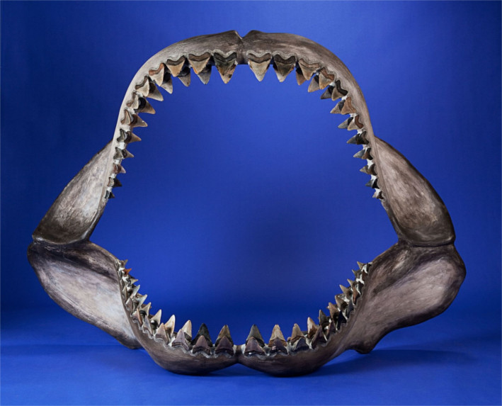

representacion de un megalodon
El megalodon(del latin megal"megas(grande)" y odont"odoús(diente)") fue un superdepredador y es el primigenio de los tiburones actuales como el tiburon blanco, que vivio en Cenozoico en inicio del Mioceno asta el final del Plioceno. Es considerado como unos de los mayores depredadores vertebrados, con los estudios sugieren que era al actual tiburon blanco. Se teg a debatir cerca de un siglo y aun sigue en disputa sobre la asignación taxonómica del megalodon en don interpretaciones: Carcharodon megalodon (en la familia Lamnidae) o bien Carcharocles megalodon (en la familia Otodontidae). vivio en todos los mares y oceanos del planeta.
mandibula fossilisada del megalodon.